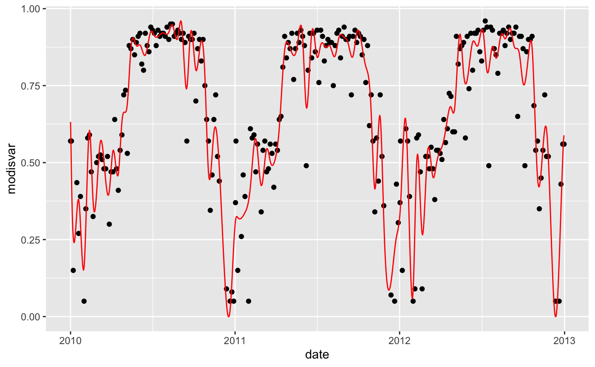
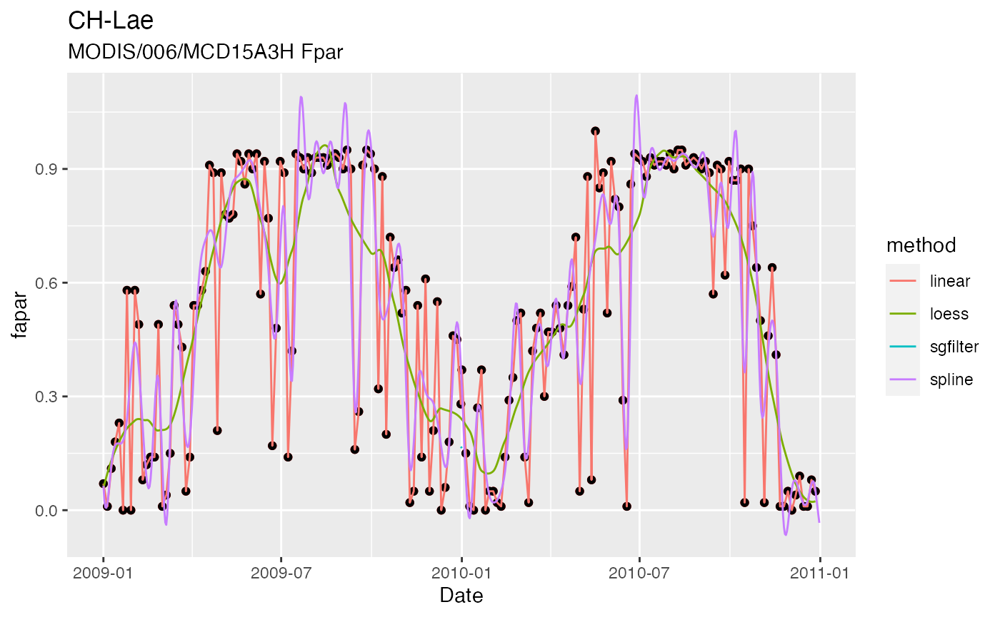

Overview
The package ingestr provides functions to extract (ingest) point data (given longitude, latitude, and required dates) from large global files or remote data servers and create time series at user-specified temporal resolution. This can be done for a set of sites at once, given a data frame containing the meta info for each site (see data frame siteinfo, with columns lon for longitude, lat for latitude, date_start and date_end specifying required dates). The output for such a set of site-level data is a nested data frame with rows for each site and columns lon, lat, date_start, and date_end plus an added column where the time series of ingested data is nested inside.
Data can be ingested for different data types (argument source in several functions), each dealing with a specific format of the original data and specific functions to read from respective files or remote servers. The following data types can be handled currently (more to be added by you if you like):
Meteo data:
- FLUXNET (also flux data can be read in)
- WATCH-WFDEI
- CRU
Data on Google Earth Engine (using Koen Hufken’s gee_suset library):
- MODIS FPAR
- MODIS EVI
- MODIS GPP
MODIS data (not yet implemented):
- RModisTools R package to access data on remote server ORNL DAAC (not yet implemented).
Examples to read data for a single site for each data type are given in Section ‘Examples for a single site’. Handling ingestion for multiple sites is descrbed in Section ‘Example for a set of sites’.
Examples for a single site
FLUXNET 2015
Reading from FLUXNET 2015 files offers additional settings to be used specifically. Here, we’re specifying that no soil water content data is read, and that half-hourly data is stored in a separate directory. The latter specification is used to derive daytime VPD which is not given in FLUXNET 2015 data, but required here (see getvars element vpd = "VPD_F_DAY").
settings_fluxnet <- list(
dir_hh = "~/data/FLUXNET-2015_Tier1/20191024/HH/",
getswc = FALSE)
df_fluxnet <- ingestr::ingest_bysite(
sitename = "CH-Lae",
source = "fluxnet2015",
getvars = list(temp = "TA_F_DAY",
prec = "P_F",
vpd = "VPD_F_DAY",
swin = "SW_IN_F",
netrad = "NETRAD",
patm = "PA_F"),
dir = "~/data/FLUXNET-2015_Tier1/20191024/DD/",
settings = settings_fluxnet,
timescale = "d",
year_start = 2010,
year_end = 2012,
verbose = FALSE
)## Warning in as.POSIXlt.POSIXct(x, tz): unknown timezone 'zone/tz/2019c.1.0/
## zoneinfo/Europe/Zurich'df_fluxnet## # A tibble: 1,095 x 9
## date temp prec vpd swin netrad patm ppfd sitename
## <date> <dbl> <dbl> <dbl> <dbl> <dbl> <dbl> <dbl> <chr>
## 1 2010-01-01 1.50 4.62 7.81 2019773. NA 91032 4.12 CH-Lae
## 2 2010-01-02 -5.10 3.04 49.0 4958755. NA 92928 10.1 CH-Lae
## 3 2010-01-03 -5.22 0.001 133. 6840288 NA 93320 14.0 CH-Lae
## 4 2010-01-04 -5.94 0 92.3 6632064 NA 92687 13.5 CH-Lae
## 5 2010-01-05 -7.96 0 27.3 3333658. NA 91863 6.80 CH-Lae
## 6 2010-01-06 -6.33 1.11 9.04 1200528. NA 91607 2.45 CH-Lae
## 7 2010-01-07 -3.77 0.091 44.8 5301936 NA 92168 10.8 CH-Lae
## 8 2010-01-08 -5.78 3.79 10.1 594691. NA 92003 1.21 CH-Lae
## 9 2010-01-09 -8.32 2.38 16.6 427507. NA 91824 0.872 CH-Lae
## 10 2010-01-10 -7.78 0.724 32.1 1383005. NA 92482 2.82 CH-Lae
## # … with 1,085 more rowsWATCH-WFDEI
Let’s extract data for the location corresponding to FLUXNET site ‘CH-Lae’ (lon = 8.365, lat = 47.4781).
df_watch <- ingest_bysite(
sitename = "CH-Lae",
source = "watch_wfdei",
getvars = list(temp = "Tair"),
dir = "~/data/watch_wfdei/",
timescale = "d",
year_start = 2010,
year_end = 2012,
lon = 8.365,
lat = 47.4781,
verbose = FALSE
)## [1] "vobjtovarid4: **** WARNING **** I was asked to get a varid for dimension named tstep BUT this dimension HAS NO DIMVAR! Code will probably fail at this point"
## [1] "vobjtovarid4: **** WARNING **** I was asked to get a varid for dimension named tstep BUT this dimension HAS NO DIMVAR! Code will probably fail at this point"
## [1] "vobjtovarid4: **** WARNING **** I was asked to get a varid for dimension named tstep BUT this dimension HAS NO DIMVAR! Code will probably fail at this point"
## [1] "vobjtovarid4: **** WARNING **** I was asked to get a varid for dimension named tstep BUT this dimension HAS NO DIMVAR! Code will probably fail at this point"
## [1] "vobjtovarid4: **** WARNING **** I was asked to get a varid for dimension named tstep BUT this dimension HAS NO DIMVAR! Code will probably fail at this point"
## [1] "vobjtovarid4: **** WARNING **** I was asked to get a varid for dimension named tstep BUT this dimension HAS NO DIMVAR! Code will probably fail at this point"
## [1] "vobjtovarid4: **** WARNING **** I was asked to get a varid for dimension named tstep BUT this dimension HAS NO DIMVAR! Code will probably fail at this point"
## [1] "vobjtovarid4: **** WARNING **** I was asked to get a varid for dimension named tstep BUT this dimension HAS NO DIMVAR! Code will probably fail at this point"
## [1] "vobjtovarid4: **** WARNING **** I was asked to get a varid for dimension named tstep BUT this dimension HAS NO DIMVAR! Code will probably fail at this point"
## [1] "vobjtovarid4: **** WARNING **** I was asked to get a varid for dimension named tstep BUT this dimension HAS NO DIMVAR! Code will probably fail at this point"
## [1] "vobjtovarid4: **** WARNING **** I was asked to get a varid for dimension named tstep BUT this dimension HAS NO DIMVAR! Code will probably fail at this point"
## [1] "vobjtovarid4: **** WARNING **** I was asked to get a varid for dimension named tstep BUT this dimension HAS NO DIMVAR! Code will probably fail at this point"
## [1] "vobjtovarid4: **** WARNING **** I was asked to get a varid for dimension named tstep BUT this dimension HAS NO DIMVAR! Code will probably fail at this point"
## [1] "vobjtovarid4: **** WARNING **** I was asked to get a varid for dimension named tstep BUT this dimension HAS NO DIMVAR! Code will probably fail at this point"
## [1] "vobjtovarid4: **** WARNING **** I was asked to get a varid for dimension named tstep BUT this dimension HAS NO DIMVAR! Code will probably fail at this point"
## [1] "vobjtovarid4: **** WARNING **** I was asked to get a varid for dimension named tstep BUT this dimension HAS NO DIMVAR! Code will probably fail at this point"
## [1] "vobjtovarid4: **** WARNING **** I was asked to get a varid for dimension named tstep BUT this dimension HAS NO DIMVAR! Code will probably fail at this point"
## [1] "vobjtovarid4: **** WARNING **** I was asked to get a varid for dimension named tstep BUT this dimension HAS NO DIMVAR! Code will probably fail at this point"
## [1] "vobjtovarid4: **** WARNING **** I was asked to get a varid for dimension named tstep BUT this dimension HAS NO DIMVAR! Code will probably fail at this point"
## [1] "vobjtovarid4: **** WARNING **** I was asked to get a varid for dimension named tstep BUT this dimension HAS NO DIMVAR! Code will probably fail at this point"
## [1] "vobjtovarid4: **** WARNING **** I was asked to get a varid for dimension named tstep BUT this dimension HAS NO DIMVAR! Code will probably fail at this point"
## [1] "vobjtovarid4: **** WARNING **** I was asked to get a varid for dimension named tstep BUT this dimension HAS NO DIMVAR! Code will probably fail at this point"
## [1] "vobjtovarid4: **** WARNING **** I was asked to get a varid for dimension named tstep BUT this dimension HAS NO DIMVAR! Code will probably fail at this point"
## [1] "vobjtovarid4: **** WARNING **** I was asked to get a varid for dimension named tstep BUT this dimension HAS NO DIMVAR! Code will probably fail at this point"
## [1] "vobjtovarid4: **** WARNING **** I was asked to get a varid for dimension named tstep BUT this dimension HAS NO DIMVAR! Code will probably fail at this point"
## [1] "vobjtovarid4: **** WARNING **** I was asked to get a varid for dimension named tstep BUT this dimension HAS NO DIMVAR! Code will probably fail at this point"
## [1] "vobjtovarid4: **** WARNING **** I was asked to get a varid for dimension named tstep BUT this dimension HAS NO DIMVAR! Code will probably fail at this point"
## [1] "vobjtovarid4: **** WARNING **** I was asked to get a varid for dimension named tstep BUT this dimension HAS NO DIMVAR! Code will probably fail at this point"
## [1] "vobjtovarid4: **** WARNING **** I was asked to get a varid for dimension named tstep BUT this dimension HAS NO DIMVAR! Code will probably fail at this point"
## [1] "vobjtovarid4: **** WARNING **** I was asked to get a varid for dimension named tstep BUT this dimension HAS NO DIMVAR! Code will probably fail at this point"
## [1] "vobjtovarid4: **** WARNING **** I was asked to get a varid for dimension named tstep BUT this dimension HAS NO DIMVAR! Code will probably fail at this point"
## [1] "vobjtovarid4: **** WARNING **** I was asked to get a varid for dimension named tstep BUT this dimension HAS NO DIMVAR! Code will probably fail at this point"
## [1] "vobjtovarid4: **** WARNING **** I was asked to get a varid for dimension named tstep BUT this dimension HAS NO DIMVAR! Code will probably fail at this point"
## [1] "vobjtovarid4: **** WARNING **** I was asked to get a varid for dimension named tstep BUT this dimension HAS NO DIMVAR! Code will probably fail at this point"
## [1] "vobjtovarid4: **** WARNING **** I was asked to get a varid for dimension named tstep BUT this dimension HAS NO DIMVAR! Code will probably fail at this point"
## [1] "vobjtovarid4: **** WARNING **** I was asked to get a varid for dimension named tstep BUT this dimension HAS NO DIMVAR! Code will probably fail at this point"df_watch## # A tibble: 1,095 x 3
## sitename temp date
## <chr> <dbl> <date>
## 1 CH-Lae 1.32 2010-01-01
## 2 CH-Lae -3.77 2010-01-02
## 3 CH-Lae -4.33 2010-01-03
## 4 CH-Lae -4.53 2010-01-04
## 5 CH-Lae -3.27 2010-01-05
## 6 CH-Lae -2.71 2010-01-06
## 7 CH-Lae -2.66 2010-01-07
## 8 CH-Lae -3.47 2010-01-08
## 9 CH-Lae -4.70 2010-01-09
## 10 CH-Lae -4.71 2010-01-10
## # … with 1,085 more rowsCRU
As above, let’s extract CRU data for the location corresponding to FLUXNET site ‘CH-Lae’ (lon = 8.365, lat = 47.4781). Note that we’re using tmx (the daily maximum temperature).
df_cru <- ingest_bysite(
sitename = "CH-Lae",
source = "cru",
getvars = list(temp = "tmx"),
dir = "~/data/cru/ts_4.01/",
timescale = "d",
year_start = 2010,
year_end = 2012,
lon = 8.365,
lat = 47.4781,
verbose = FALSE
)## Warning in .varName(nc, varname, warn = warn): varname used is: tmx
## If that is not correct, you can set it to one of: tmx, stndf_cru## # A tibble: 1,095 x 3
## date temp sitename
## <date> <dbl> <chr>
## 1 2010-01-01 0.511 CH-Lae
## 2 2010-01-02 0.343 CH-Lae
## 3 2010-01-03 0.189 CH-Lae
## 4 2010-01-04 0.0493 CH-Lae
## 5 2010-01-05 -0.0769 CH-Lae
## 6 2010-01-06 -0.189 CH-Lae
## 7 2010-01-07 -0.288 CH-Lae
## 8 2010-01-08 -0.373 CH-Lae
## 9 2010-01-09 -0.444 CH-Lae
## 10 2010-01-10 -0.501 CH-Lae
## # … with 1,085 more rowsWe can compare the temperature recorded at the site and the temperature data extracted from WATCH-WFDEI.
df <- df_fluxnet %>%
rename(temp_fluxnet = temp) %>%
left_join(rename(df_watch, temp_watch = temp), by = c("sitename", "date")) %>%
left_join(rename(df_cru, temp_cru = temp), by = c("sitename", "date")) %>%
pivot_longer(cols = c(temp_fluxnet, temp_watch, temp_cru), names_to = "source", values_to = "temp", names_prefix = "temp_")
library(ggplot2)
df %>%
ggplot(aes(x = date, y = temp, color = source)) +
geom_line() Looks sweet.
Looks sweet.
Google Earth Engine
The library gee_subset by Koen Hufkens can be downloaded from this link and used to extract data directly from Google Earth Engine. Note that this requires the following programmes to be available:
Then, carry out the follwing steps:
- In your terminal, change to where you want to have the repository. In this example, we’re cloning it into our home directory:
cd ~
git clone https://github.com/khufkens/google_earth_engine_subsets.gitTo get access to using the Google Earth Engine API (required to use the gee_subset library), carry out the following steps in your terminal. This follows steps described here.
- Install google API Python client
sudo pip install --upgrade google-api-python-clientI had an error and first had to do this here following this link:
sudo pip install --ignore-installed six- Install pyCrypto
sudo pip install pyCrypto --upgrade- Install Python GEE API
sudo pip install earthengine-api- Run authentification for GEE
earthengine authenticate- Finally, try if it works. This shouldn’t return an error:
python -c "import ee; ee.Initialize()"MODIS FPAR
To facilitate the selection of data products and bands to be downloaded, you may use the function get_settings_gee() which defines defaults for different data bundles (c("modis_fpar", "modis_evi", "modis_lai", "modis_gpp") are available). The following example is for downloading MODIS FPAR data.
settings_gee <- get_settings_gee(
bundle = "modis_fpar",
python_path = system("which python", intern = TRUE),
gee_path = "~/google_earth_engine_subsets/gee_subset/",
data_path = "~/data/gee_subsets/",
splined = TRUE,
do_plot_interpolated = FALSE,
overwrite_raw = FALSE,
overwrite_interpol = FALSE
)This can now be used to download the data to the directory specified by argument data_path of function get_settings_gee().
df_gee_modis_fpar <- ingest_bysite(
sitename = "CH-Lae",
source = "gee",
year_start = 2010,
year_end = 2012,
lon = 8.365,
lat = 47.4781,
settings = settings_gee,
verbose = FALSE
)## Parsed with column specification:
## cols(
## date = col_date(format = ""),
## year_dec = col_double(),
## doy = col_double(),
## modisvar = col_double(),
## data_loess = col_double(),
## spline = col_double(),
## interpl = col_double(),
## sgfiltered = col_double(),
## modisvar_interpol = col_double()
## )Plot this data.
df_gee_modis_fpar %>%
ggplot(aes(x = date)) +
geom_point(aes(y = modisvar)) +
geom_line(aes(y = modisvar_interpol), col = 'red')## Warning: Removed 836 rows containing missing values (geom_point).
Examples for a site ensemble
To collect data from an ensemble of sites, we have to define a meta data frame, here called siteinfo, with rows for each site and columns lon for longitude, lat for latitude, date_start and date_end for required dates (Dates are objects returned by a lubridate::ymd() function call - this stands for year-month-day). The function ingest() can then be used to collect all site-level data as a nested data frame corresponding to the metadata siteinfo with an added column named data where the time series of ingested data is nested inside.
Note that extracting for an ensemble of sites at once is more efficient for data types that are global files (WATCH-WFDEI, and CRU). In this case, the raster package can be used to efficiently ingest data.
First, define a list of sites and get site meta information. The required meta information is provided in file "~/data/FLUXNET-2015_Tier1/siteinfo_fluxnet2015_sofun+whc.csv".
mysites <- c("BE-Vie", "DE-Tha", "DK-Sor", "FI-Hyy", "IT-Col", "NL-Loo", "US-MMS", "US-WCr", "US-UMB", "US-Syv", "DE-Hai")
siteinfo <- readr::read_csv("~/data/FLUXNET-2015_Tier1/siteinfo_fluxnet2015_sofun+whc.csv") %>%
rename(sitename = mysitename) %>%
filter(sitename %in% mysites) %>%
mutate(date_start = lubridate::ymd(paste0(year_start, "-01-01"))) %>%
mutate(date_end = lubridate::ymd(paste0(year_end, "-12-31")))## Parsed with column specification:
## cols(
## mysitename = col_character(),
## lon = col_double(),
## lat = col_double(),
## elv = col_double(),
## year_start = col_double(),
## year_end = col_double(),
## years_data = col_double(),
## classid = col_character(),
## elv_watch = col_double(),
## elv_diff = col_double(),
## whc = col_double()
## )Next, the data can be ingested for all sites at once. Let’s do it for different data types again.
FLUXNET 2015
ddf_fluxnet <- ingest(
siteinfo = siteinfo,
source = "fluxnet2015",
getvars = list(temp = "TA_F_DAY", prec = "P_F", vpd = "VPD_F_DAY", swin = "SW_IN_F", netrad = "NETRAD", patm = "PA_F"),
dir = "~/data/FLUXNET-2015_Tier1/20191024/DD/",
settings = list(dir_hh = "~/data/FLUXNET-2015_Tier1/20191024/HH/", getswc = FALSE, threshold_GPP = 0.5),
timescale = "d"
)CRU
ddf_cru <- ingest(
siteinfo = siteinfo,
source = "cru",
getvars = list(temp = "tmx"),
dir = "~/data/cru/ts_4.01/"
)## Warning in .varName(nc, varname, warn = warn): varname used is: tmx
## If that is not correct, you can set it to one of: tmx, stnCheck it out for the first site (BE-Vie).
ggplot() +
geom_line(data = ddf_fluxnet$data[[1]], aes(x = date, y = temp)) +
geom_line(data = ddf_watch$data[[1]], aes(x = date, y = temp), col = "royalblue") +
geom_line(data = ddf_cru$data[[1]], aes(x = date, y = temp), col = "red") +
xlim(ymd("2000-01-01"), ymd("2005-12-31"))## Warning: Removed 4745 row(s) containing missing values (geom_path).
## Warning: Removed 4745 row(s) containing missing values (geom_path).
## Warning: Removed 4745 row(s) containing missing values (geom_path).